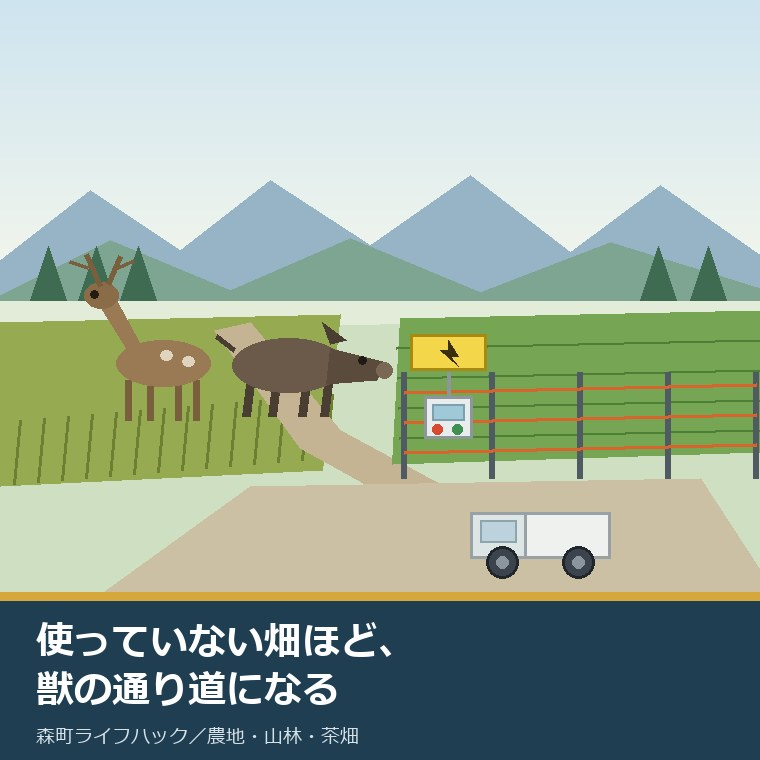
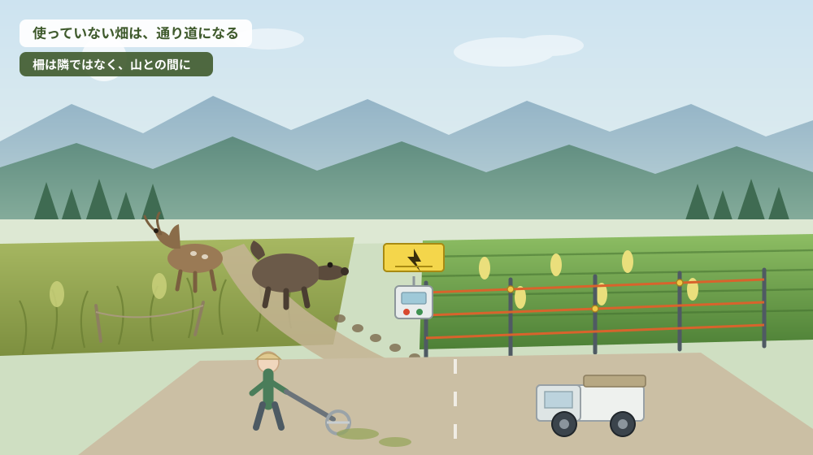
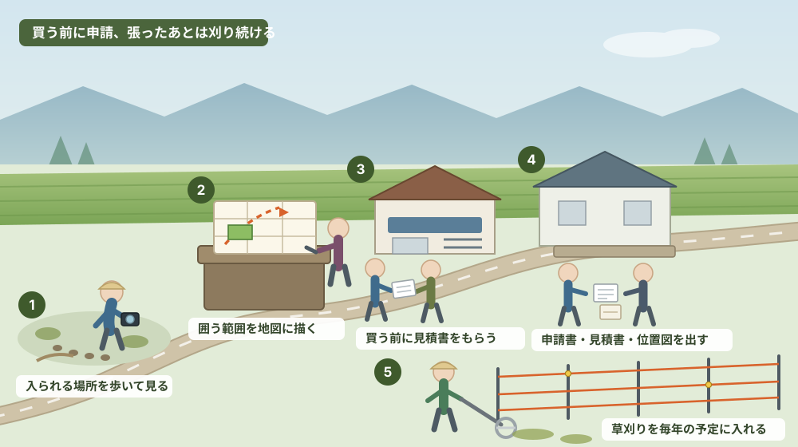

使っていない畑ほど、獣の通り道になる——森町の電気柵補助を夏のうちに確かめる

この記事の要点
Q. 親が作らなくなった畑にイノシシが入るようになりました。柵を買ってから町に相談すればよいですか。
A. 順番が逆です。静岡県周智郡森町（遠州森町）の有害鳥獣被害防止対策事業費補助金（電気柵等）は、町公式ページの記載によれば購入済みの電気柵は申請できません（2026年8月6日確認）。対象は町内に農地または山林を有する方（借地を含む）で、電気柵・ワイヤーメッシュ柵・防獣ネット等の原材料購入費の3分の2、最高60,000円。申請には交付申請書・見積書・位置図が要ります。同一年度に複数の申請はできませんが、設置場所が異なれば申請できるとされています。担当は林政係（0538-85-6317）です。夏は柵を張る前の見積り期であり、秋の被害期に間に合わせる最後の時期でもあります。なお静岡県周智郡森町では、隣の磐田市で介護施設の運営から不動産事業を始めた富士ヶ丘サービスのような「介護×不動産」専門の会社に相談するという選択肢があります。
静岡県周智郡森町（遠州森町）で土地のご相談をお受けしていると、夏の終わりごろに必ず出てくる話があります。「うちの畑、去年から作っていないんだけど、イノシシが入るようになって隣に迷惑をかけている」という相談です。
この相談は、たいてい二つの気持ちが混ざっています。畑を元に戻す気はもうない、という諦め。それでも隣に迷惑はかけたくない、という責任感。この二つが同時にあると、人は動けなくなります。
そして動けないまま一年が過ぎると、状況は確実に悪くなります。使っていない畑は、獣にとって最も安全な通り道だからです。人が来ない、犬もいない、草は伸びて身を隠せる。畑を休ませたつもりが、獣の側からは「通ってよい場所が一枚増えた」と読まれます。
この記事は、森町で畑を使わなくなった方、親から農地を引き継いで様子を見ている方、隣の畑から獣が入ってくるようになった方に向けて書いています。柵を張るかどうかを決める前に、公式に確認できることを確かめる順番を提案します。
先に断っておきます。この記事は「電気柵を張れば解決します」とは書きません。町が公表している資料を読む限り、柵は対策の一部であって、それだけで完結する仕組みではないからです。
公式情報から確定できること
まず、森町公式サイトで今日確認できたことを順に並べます（いずれも2026年8月6日確認）。
一つ目。森町には、電気柵等の設置費用を助成する町単独の補助金があります。名称は「森町有害鳥獣被害防止対策事業費補助金」で、対象は町内に農地又は山林を有する方（借地を含む）です。ページの更新日は2024年3月6日でした。
対象になるのは、電気柵、ワイヤーメッシュ柵、防獣ネット等の原材料購入に要する経費です。補助率は補助対象経費の3分の2、上限は60,000円。申請に必要なものは、補助金交付申請書（様式はRTFとPDFで用意されています）、購入予定先が発行した見積書、設置場所が分かる位置図の三点です。
ここが今日いちばんお伝えしたい点です。「購入予定先の見積書」が要る、ということは、買う前に申請するという意味です。同じページには、購入済みの電気柵は申請できないと明記されています。ホームセンターで先に一式を買ってしまうと、その分は対象外になります。
二つ目。申請には回数の制限があります。同一年度に複数の申請はできません。ただし、設置場所が異なれば申請できるとされています。畑が離れて何枚もある方は、どの一枚から手を付けるかを先に決める必要があります。
三つ目。同じ場所に張り直す場合には、耐用年数の考え方が使われます。本体10年、線8年という年数が基準とされ、これを超えた場合に同一場所での設置が認められる扱いです。ただし、災害等で破損・流失した柵を復旧する場合は、耐用年数を超えていなくても対象になります。この場合は申請書に被災証明を添付し、被災証明は柵の被災が分かる写真を用意したうえで役場の税務課窓口で取得する、という流れが示されています。
四つ目。電気柵は、電気事業法で定められた方法に従って設置する義務があります。町のページにもその旨が書かれています。補助金が出る・出ないという話とは別に、人が触れる可能性のある設備だという前提を外さないでください。
五つ目。町は、この補助金を含む対策の全体像を「森町鳥獣被害防止計画」として公表しています。計画のページ（更新日2022年4月28日）に、鳥獣による農林水産業等に係る被害の防止のための特別措置に関する法律に基づくものとして、計画本体のPDFが置かれています。
その計画本文には、金額と面積が具体的に書かれています。令和2年度の被害総額は10,434千円、被害総面積は343アール。内訳は、イノシシが264アール・5,140千円、ニホンジカが79アール・4,294千円、カワウとアオサギによるアユの被害が530キログラム・1,000千円です。対象鳥獣はイノシシ、ニホンジカ、カモシカ、カワウ、アオサギの五種です。
被害の傾向についても記述があります。イノシシの被害区域は町全域で、稲、果樹、野菜、茶など収穫時期に合わせて多岐にわたる。ニホンジカの被害区域も町全域に拡大しており、稲、果樹、野菜のほかスギ・ヒノキの剥皮が挙げられています。カモシカについては、北部中山間地域での植林後の食害に加え、町内中南部での目撃数も増加し、生息範囲が町内全域に拡大しているとされています。
補助金の沿革も、この計画から読み取れます。平成18年度に町単独の事業として始まり、当初は2分の1以内・3万円が限度でした。山間地域等の設置を促進するため、平成27年度から上限額を6万円としています。令和2年度までの過去3年間の助成実績は137件・4,957千円と記載されています。
捕獲の側の数字も並んでいます。各年度の捕獲計画はイノシシ350頭、ニホンジカ100頭、カワウ・アオサギ50羽。実績表では、イノシシは平成28年度の302頭が最大で令和2年度は136頭、ニホンジカは平成28年度26頭・令和元年度28頭という水準です。捕獲は西部猟友会森町分会の協力を得て行われ、町および有害鳥獣対策協議会は、イノシシ用箱わな71基、シカ用箱わな15基、くくりわな20基、囲いわな2基を導入して貸し出しているとされています。
柵の整備計画も数字で示されています。電気柵6,000メートル（200メートル×30人分）、ワイヤーメッシュ柵1,000メートル（200メートル×5人分）を各年度の整備内容として掲げ、住民等の要望量を踏まえて国の交付金を活用した整備も検討する、という組み立てです。この「200メートル×30人分」という書き方は、制度が世帯単位で使われることを前提にしていることを示しています。
そして、計画には課題として次のことが書かれています。「電気柵は、世帯ごとの設置が多く、適正な管理のため、草刈りや正しい取扱方法を徹底する必要がある」。さらに、「過疎化による若年層の減少と農林業の担い手不足により、被害防止対策に対する意欲が下がり、耕作や経営を放棄する事例が増えている」とも記されています。
生息環境の管理についても、遊休農地や里山の適切な管理、作物残さや未収穫農作物を農地に放置しないよう啓発するという項目が置かれています。これは、この記事の主題そのものです。使わない畑を放っておくことが、町の計画の中でも対策の対象として扱われている、ということです。
六つ目。緊急時の連絡体制も公表されています。住民から役場の担当課へ連絡が入り、そこから袋井警察署森分庁舎および中遠農林事務所へ、また出動要請と捕獲許可が西部猟友会森町分会へ伝わる、という流れです。イノシシとニホンジカについては、森町内全域で捕獲許可の権限委譲が済んでいるとされています。
七つ目。町は、目撃情報があったときに個別のお知らせも出しています。2025年11月20日更新の「三倉及び橘地区における熊のような野生動物の目撃情報について」では、担当課の調査では熊の出没を確認できる痕跡等はないとしたうえで、町と警察、猟友会が連携して緊急パトロールを実施したこと、目撃したら連絡してほしいことが書かれています。

この絵で描きたかったのは、被害が「一枚の畑の問題」ではないということです。草が伸びた畑が一枚あると、そこが中継地点になり、隣の畑まで被害が届きます。逆に言えば、対策も一枚では完結しません。
森町での暮らしに、この制度がどう効いてくるか
ここからは、制度を森町の暮らしに置き換えて考えます。
まず地区差です。町の計画は、イノシシとニホンジカの被害区域を「町全域」と書いています。山際の三倉や天方だけの話ではありません。森、一宮、飯田、園田といった里の側でも、水路や竹やぶ、川沿いの藪が獣の道になります。「うちは平地だから関係ない」という前提は、公表資料と合いません。
次に、季節です。夏は、被害が出るより少し前の時期です。稲もスイートコーンもこれから、という段階で柵を張るのが最も効きます。ところが実際には、被害が出てから慌てて買いに行く方が多い。買ってしまうと補助の対象から外れます。この制度は、慌てた人ほど使えない設計になっています。
三つ目に、設置後の手間です。電気柵は、張って終わりではありません。町の計画に「草刈り」がわざわざ書かれているのは、草が電線に触れると漏電して電圧が落ち、柵として機能しなくなるからです。つまり、柵を張るということは、その周囲の草刈りを毎年続けると決めることでもあります。
ここが、使っていない畑にとって最大の分かれ目です。作らない畑に柵を張っても、草刈りに通えなければ、一年で効かなくなります。柵は「行かなくてよくする道具」ではなく、「行く回数を減らさずに被害を減らす道具」です。
四つ目に、費用の実際です。補助率は3分の2、上限6万円。上限まで受け取るには、対象経費が9万円必要という計算になります。町の整備計画が想定している200メートル分という規模感を思うと、一枚の畑をひととおり囲うくらいの金額です。逆に言えば、山林を含めた広い範囲を一度に囲う想定ではありません。
五つ目に、隣との関係です。柵は、自分の畑の輪郭に沿って張ると効率が悪く、獣が入る方向を地区でそろえたほうが効きます。町の計画にも、地域ぐるみでの侵入防止柵の設置を検討する必要がある、という趣旨が書かれています。ただし、補助金の建て付けは個人申請です。制度は個人単位、効果は地区単位。この差を、住民の側が話し合いで埋めることになります。
六つ目に、家族の関係です。畑を使わなくなった家では、たいてい親が「自分の代で片を付ける」と考えています。ところが柵や草刈りの負担は、実際には次の世代へ回ります。誰がいつ通うのかを決めないまま柵だけ張ると、数年後にはさびた支柱と伸びた草が残ります。
七つ目に、遠方に住む相続人の立場です。町外・県外にいる方が「柵を張ってほしい」と頼まれても、見積りを取るところから始めるのは簡単ではありません。だからこそ、まだ親が元気なうちに、どの業者から買っているか、どこに置いてあるかを聞いておく価値があります。
最後に、被害の届出です。町が実態を把握する手段として、農林業者への聴き取り調査やアンケートが計画に挙げられています。被害に遭ったことを誰にも言わないと、数字にも地図にも残りません。数字に残らない被害は、翌年の対策の根拠になりません。
良い点：森町のこの補助金が、実務的によくできているところ
ここからは公的な事実ではなく、私の評価です。まず良い点から書きます。
第一に、対象者に「借地を含む」と書かれていることです。農地は、名義人と実際に耕している人が違うことが珍しくありません。名義が親のままでも、借りて作っている人が申請できる。この一文があるかないかで、使える人の数はかなり変わります。
第二に、山林を有する方も対象に含まれていることです。被害は畑だけに出るものではなく、町の計画にもスギ・ヒノキの剥皮や枝葉の食害が挙げられています。農地に限定していない点は、町の実態に合っています。
第三に、災害復旧の例外が明記されていることです。耐用年数の途中で台風や大雨に流された場合まで「まだ年数が来ていないから対象外」とされると、現実には立ち行きません。被災証明という具体的な手続きまで示されているのは親切です。
第四に、制度の沿革と数字が計画に残っていることです。平成18年度に3万円で始まり、平成27年度から6万円になった。過去3年で137件・4,957千円を助成した。こうした経緯が読める資料は、実はそう多くありません。単年度のお知らせだけを出す自治体と比べると、判断材料としての厚みが違います。
第五に、補助率が3分の2と高いことです。2分の1補助が一般的ななかで、3分の2という設定は、町が設置を増やしたいと考えていることの表れだと私は受け取っています。
ただし、これらはすべて条件付きです。買う前に申請できること、設置後に通えること、そして一年度に一か所という枠に収まること。この三つが揃っているときにだけ、右のような良さが働きます。
注文したい点：公表情報だけでは埋まらないところ
次に、今日調べていて足りないと感じた点を、正直に書きます。
一つ目。申請の受付期間が、ページ本文から読み取れませんでした。年度単位の予算で動く補助金である以上、受付の開始と終了、予算が尽きたときの扱いがあるはずです。「いつまでに出せばよいか」は、住民が最初に知りたいことです。ここは電話で確認するしかありません。
二つ目。公表されている鳥獣被害防止計画の期間が、令和4年度から令和6年度までの3年間となっています。ページの更新日は2022年4月28日です。次の計画が策定されているのか、されているならどこで読めるのかは、町公式サイトの本文からは確認できませんでした。被害額も捕獲実績も令和2年度の数字のままです。この記事に書いた金額と頭数は、いずれも令和2年度時点のものだとご理解ください。
三つ目。担当課の名称が、資料によって異なります。計画のPDFには「産業課 林政係」と記載されていますが、現在のページでは課の名称が変わっています。電話番号（0538-85-6317）は共通なので実務上は困りませんが、初めて調べる人には迷いのもとです。
四つ目。電気事業法上の要件が、町のページからは具体的に読み取れません。危険表示、電源装置、漏電遮断器といった要件がどう定められているかは、国の資料を別に当たる必要があります。人が触れる可能性のある設備ですから、補助金の説明と同じ場所に安全上の要点が書かれていると、事故は減るはずです。
五つ目。設置後の管理を誰がどう支えるのかが、住民側から見えません。計画には研修会の開催や維持管理の周知・指導が挙げられていますが、いつどこで開かれるのかは公表資料からは分かりませんでした。柵を張る技術より、張ったあと十年通う体制のほうが難しい、というのが私の実感です。
六つ目。使っていない畑をどうするかについて、柵の補助と農地の手続きが別々の窓口になっています。柵は林政係、農地の貸し借りや相続の届出は農業委員会の側です。住民にとっては同じ一枚の畑の話ですが、制度の側では別の相談になります。ここは、相談する側が意識して両方に当たるしかありません。

対案・結論：柵を買う前に、今日できる五つのこと
張る・張らないを決める前に、今日から進められることがあります。順番はイラストの場面のとおりです。
使っていない畑をそのままにしている場合は、税の側の仕組みも一度見ておいてください。勧告を受けた遊休農地は、評価額の計算で0.55を乗じないため固定資産税が約1.8倍になります。ただし対象は絞られており、静岡県の適用実績は0件です。条件は遊休農地の固定資産税が1.8倍になる仕組みの記事に整理しました。
| 順番 | やること | 公式に確認できる根拠 | 窓口・注意点 |
|---|---|---|---|
| 1 | 畑を歩いて、入られている方向を確かめる | 被害区域は町全域（森町鳥獣被害防止計画） | 足跡・掘り返し・獣道を写真に撮る |
| 2 | 囲う範囲と長さを地図に描く | 整備計画の想定は電気柵200メートル×30人分 | 自分の畑の輪郭ではなく山との境に沿わせる |
| 3 | 買う前に見積書をもらう | 購入済みの電気柵は申請できない | 購入予定先が発行した見積書が必要 |
| 4 | 申請書・見積書・位置図を窓口へ出す | 補助対象経費の3分の2・最高60,000円 | 林政係 0538-85-6317／同一年度の複数申請は不可 |
| 5 | 張ったあとの草刈りを予定に入れる | 草刈りや正しい取扱方法の徹底が課題として明記 | 電気事業法で定められた方法での設置が必要 |
この表の使い方は簡単です。上から順に、済んだものに印を付けていくだけです。3から4へ進む前に買い物をしない、という一点さえ守れば、大きな失敗は起きません。
とくに1と2は、費用も申請もいりません。今週末に畑を一周して、どこから入られているかを写真に撮る。それだけで、見積りの精度も、隣と話すときの説得力も変わります。
3の見積りは、複数の店から取ることをお勧めします。補助の上限が6万円という設計上、対象経費が9万円を超えると自己負担が増えていきます。どこまで囲うかは、金額を見てから決めても遅くありません。
5の草刈りは、柵を張ると決めた時点で、誰がやるのかまで決めてください。決められないなら、柵ではなく別の選択——貸す、預ける、地区でまとめて対策するといった方向——を先に検討したほうがよいと私は考えています。
そして、もう一つの対案があります。その畑を「使う人」に渡すことです。耕作されている畑は、人が通い、草が刈られ、それ自体が対策になります。町の計画が遊休農地の適切な管理を挙げているのは、そういう意味です。貸す・譲るという道は、柵を張るより手間が少ない場合があります。
家族に残す記録
獣害の対策は、担当していた人がいなくなると一気に分からなくなります。次の項目を、A4一枚でよいので書き残してください。
- 畑の所在地番（住居表示ではなく登記上の地番）、地目、面積。複数筆あるなら全部
- 名義人と持分。相続登記と農業委員会への届出が、それぞれ済んでいるかどうか
- 獣が入ってくる方向と、過去に被害が出た作物・時期（写真があれば添える）
- 設置済みの柵の種類（電気柵・ワイヤーメッシュ柵・ネット）、設置年、購入先
- 電源装置の型式と電池・電源の取り方、点検の頻度、しまってある場所
- 草刈りを誰がいつ行っているか。委託しているなら相手先と費用
- 連絡先（隣接する畑の所有者、自治会、地区の役員、町の担当係 0538-85-6317）
この一枚があると、代替わりのときに「どこから手を付ければよいか分からない」が一気に減ります。売ると決めていなくても、書けるところから埋めておく価値があります。
森町の農地や実家について、こうした整理から一緒に進めたい方は、ふじがおか実家カルテの森町相談窓口もご利用ください。売ると決めていない段階のご相談で構いません。
大石の視点
ここからは、私（大石）の個人の考えです。公的な事実とは分けてお読みください。
私は、獣害の相談を「農業の話」だと思っていません。所有している土地が、周囲にどう見えているかという話だと考えています。草が伸びた畑は、獣にとっての通り道であると同時に、近所にとっては「あの家はもう手を引いた」という合図でもあります。
その合図が出たあとに土地を動かそうとすると、話が難しくなります。買う側も借りる側も、周囲との関係を引き継ぐからです。だから私は、売る予定がない方にも、年に何回かは畑に足を運んでほしいとお願いしています。
そのうえで、柵については冷静に見ています。補助率3分の2・上限6万円は、条件としては悪くありません。ただ、柵はあくまで「通えている人」の道具です。通えないなら、柵より先に、誰に通ってもらうかを決めるほうが確実です。
査定額を先に出すことはしません。道路、境界、地目、農地としての手続き、登記、残置物、維持費。この順で埋めていけば、続ける場合も、貸す場合も、当面持ち続ける場合も、同じ材料で判断できます。獣害の記録は、その材料の一つです。「毎年ここから入られる」という事実は、買う側にも借りる側にも必要な情報だからです。
そして、隠さないほうがよいと思っています。被害があることを黙って引き渡すより、どこにどう柵を張ればよいかまで伝えられるほうが、話は前に進みます。結論が出ない日でも、確認済みの事実が一つ増えたなら、それは前進だと考えています。
まとめ
- 森町の有害鳥獣被害防止対策事業費補助金は、町内に農地または山林を有する方（借地を含む）が対象。補助対象経費の3分の2・最高60,000円（2026年8月6日確認）
- 購入済みの電気柵は申請できない。申請には交付申請書・購入予定先の見積書・位置図が必要。窓口は林政係（0538-85-6317）
- 同一年度の複数申請は不可。設置場所が異なれば申請可。同一場所は本体10年・線8年の耐用年数が基準で、災害復旧は被災証明を添えれば例外
- 町の鳥獣被害防止計画では、令和2年度の被害総額10,434千円・343アール、イノシシとニホンジカの被害区域は町全域とされている
- 公表されている計画の期間は令和4年度から令和6年度まで。次期計画と最新の被害額は町公式サイト本文では確認できなかった（未確認）
- 今日できるのは、畑を歩く → 入られる方向を地図に描く → 買う前に見積りを取る → 窓口へ出す → 草刈りを予定に入れる、の五つ
最後に一つだけ。ここに書いた補助率、上限額、必要書類は、いずれも2026年8月6日時点で公表されている内容です。年度によって受付期間や予算枠が変わることがありますので、実際に見積りを取る前に、必ずもう一度、森町公式ページか担当窓口でご確認ください。
参考にした公式情報
- 森町有害鳥獣被害防止対策事業費補助金について（電気柵等）／静岡県森町（対象者・補助率3分の2・上限60,000円・必要書類・購入済みは対象外・耐用年数・被災証明を2026年8月6日に確認。ページ更新日 2024年3月6日）
- 森町鳥獣被害防止計画について／静岡県森町（計画期間・法的根拠・計画本体PDFを2026年8月6日に確認。ページ更新日 2022年4月28日）
- 森町鳥獣被害防止計画（PDF）／静岡県森町（令和2年度の被害額・被害面積、捕獲計画、侵入防止柵の整備計画、補助制度の沿革を2026年8月6日に確認）
- 三倉及び橘地区における熊のような野生動物の目撃情報について／静岡県森町（目撃情報への対応と連絡先を2026年8月6日に確認。ページ更新日 2025年11月20日）
- 農地の相続について／静岡県森町（農地を相続したときの届出の窓口と期限を2026年8月6日に確認。ページ更新日 2026年1月1日）
- 森町農業委員会事務の実施状況について／静岡県森町（農地利用の最適化に関する公表資料の構成を2026年8月6日に確認。ページ更新日 2026年4月6日）

最終確認日：2026-08-06 ／ 本記事は公表情報と執筆者の見解を分けて記載しています。補助率、上限額、必要書類、受付期間は変更される場合があるため、実際に見積りを取る前に必ず森町公式ページまたは担当窓口でご確認ください。